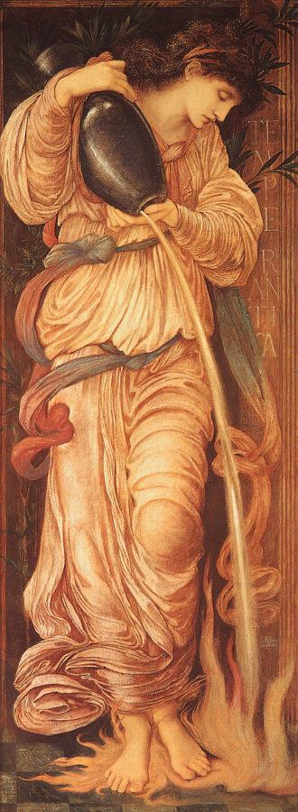

|
 |
Transl. Christian Souchon 01.01.2006- 2026 (c) (r) All rights reserved |
Notes :
|
1° La voix qui s'exprime dans « Vent et flamme » est une figure féminine. Elle est puisatière, gardienne du feu, sommet ou cime, être de vent, porteuse de saison et d'aube. Il ne s'agit pas d'une femme humaine, mais d'un principe féminin mythique, une figure de souveraineté élémentaire. Michel a souvent recours à des masques féminins pour exprimer des forces qui dépassent l'échelle humaine — songeons à Mélusine, Deirdre, Florinda ou à la « sœur » dans *Rencontre*. Ici, la voix féminine est celle du moi élémentaire du poète qui s'exprime. 2° Le poème est structuré par trois éléments : C’est un autoportrait sous un masque féminin, décrivant la vie intérieure du poète comme un jeu de forces élémentaires : Air = détachement, dépouillement, ascension. Feu = passion, danger, vérité, peur. Eau = profondeur, raison, le puits de l’être. Aile = le don poétique, à la fois promesse et prison. 3° Le « Je » est le moi poétique, imaginé sous les traits d’une femme qui entretient les puits, porte le feu et se tient sur les sommets. Elle est la gardienne de la tempête intérieure, celle qui fait remonter la raison des profondeurs et transforme le feu caché en aile. C’est pourquoi Michel l’a intitulée *Chanson* : non parce qu’elle est chantée, mais parce qu’elle est la voix d’une figure intérieure, un personnage lyrique à travers lequel le poète exprime son identité élémentaire. |
1° The speaker of "Vent et flamme" is a female figure. She is a well‑digger (puisatière), a keeper of fire, a summit or peak, a wind‑being, a bearer of season and dawn. This is not a human woman but a mythic feminine principle, a figure of elemental sovereignty. Michel often uses feminine masks to express forces that exceed the human scale — think of Mélusine, Deirdre, Florinda, or the “sister” in Rencontre. Here, the feminine voice is the poet's elemental self speaking. 2° The poem is structured by the three elements: It is a self‑portrait in a feminine mask, describing the poet’s inner life as an interplay of elemental forces: Air = detachment, stripping away, ascent. Fire = passion, danger, truth, fear. Water = depth, reason, the well of being. Wing = the poetic gift, both promise and prison. 3° The “I” is the poetic self, imagined as a woman who tends wells, carries fire, and stands on peaks. She is the guardian of the inner storm, the one who raises reason from the depths and transforms hidden fire into wing. This is why Michel titled it "Chanson": not because it is sung, but because it is the voice of an inner figure, a lyrical persona through which the poet articulates his elemental identity. |
Listen to "Wind and Flame" in English